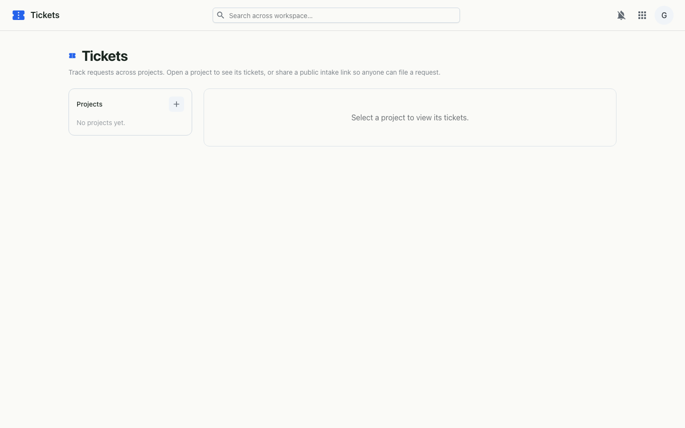

A Jira-like helpdesk for your workspace — track requests across projects, and let anyone file one through a public link, no account required.
Tickets organises support and request tracking into projects. Each project has its own key and numbering, configurable statuses, and an intake mode — either your team only, or a public link anyone can use without signing in. Open a project to see its queue, drill into a ticket to set status and priority, and work it through a threaded comment conversation.

SUP) and a description. The sidebar badges every project with its open-ticket count.SUP-12.SUP-12) to quote later.Authenticated members manage projects and tickets over the
workspace API; status and priority changes and comments are saved as you go.
Public projects additionally expose unauthenticated intake endpoints — the
submit portal fetches the project's public branding by token, posts the
request, and returns its KEY-N reference. A disabled or unknown
link renders a graceful not-found.
KEY-N) → comments